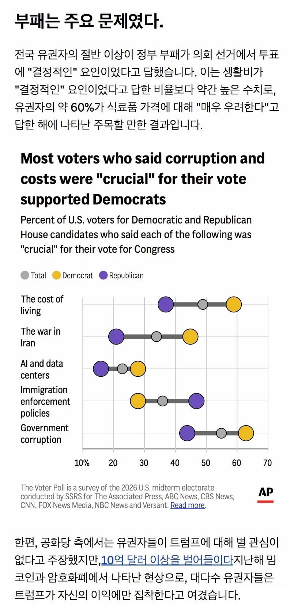
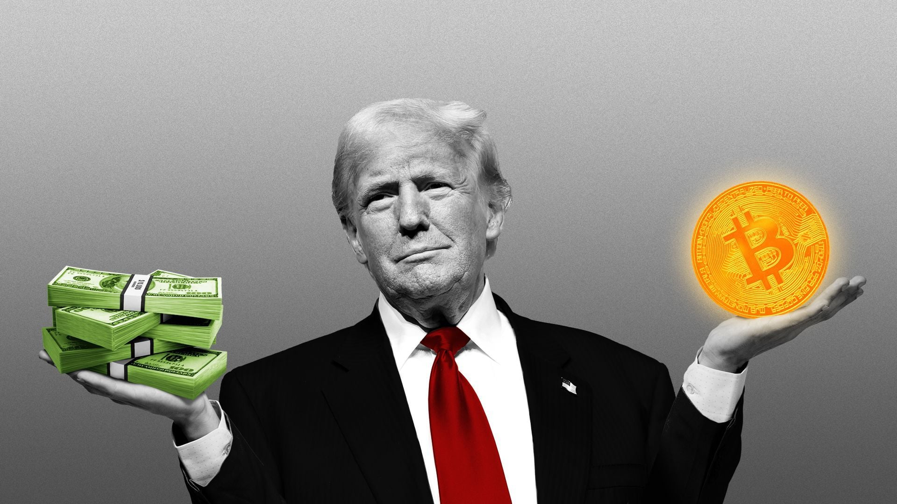
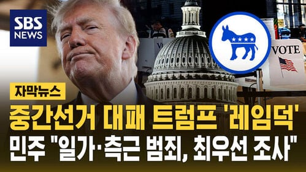

무려 생활비, 이란전쟁, 이민정책보다
트럼프 정부의 부패가 가장 심각한 문제로 꼽힘..ㄷㄷ

한편 민주당은 대대적인 의회 차원의 조사를 예고함
미국 의회는 청문회 개최, 소환장 발부권을 가지고 있는데
특히 소환장은 법적 강제력이 있어서 자료 제출이나 출석을 거부하면 의회모독죄로 징역형까지 받을 수 있는 강력한 수단임
만약 조사 중 마땅한 건수라도 잡히면 탄핵으로 이어질 수 있음
(다만 어차피 임기도 2년밖에 안남은지라 무리하게 추진할 가능성은 낮다는 말이 있음. 공화당의 협조도 필요하고, 존재 자체가 민주당 표 제조기인데 굳이?라는 의견)
물론 트럼프도 가만히 있을 인물이 아니고
이미 선거 전에 일괄 사면할 의향 있다고 밝힘ㅋㅋㅋ


트럼프의 가장 큰 문제점은 아직 살아있다는 것